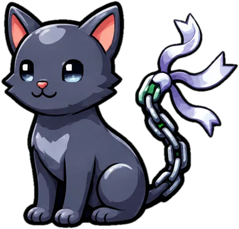

Tap a stage to read its story.
Kitsuval is a small grey kitten with round dark eyes and a short wispy ghost-ribbon tail that drifts behind it like smoke. Its paws are soft and silent and it moves without disturbing a single leaf on the floor of Ghost Hollow. It watches travellers from behind mossy stones, flicking its transparent tail whenever it is curious. The guardians found the first one sleeping on Akilla's abandoned cloak, and they say it still guards small things that have been forgotten or left behind.
Field note: Kitsuval never leaves a footprint - the only sign it passed through is a faint chill where it sat.
Ghost Hollow. Kitsuval and its family are found in the Ghost Hollow. See everyone who lives there.
Share a Bond Food that matches its types to become friends. Kitsuval loves:
A Bond Food is not a trick. It joins your spirit with the Kimuro's spirit, and only when it chooses you.
Print the Kimuro adventure packs: mazes, cards, a board game and Bond Mark medals.
See the printable packs